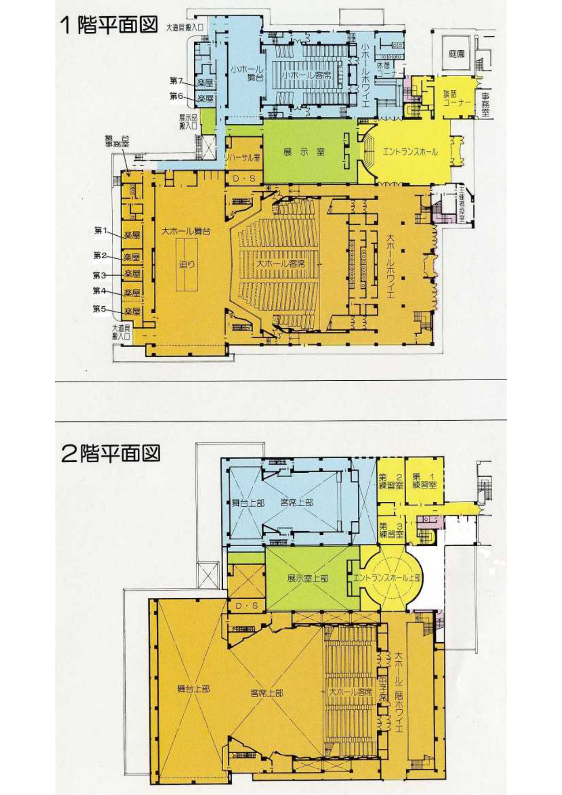

フェスティバル
フェスティバルコンセプト
『MOMENT×MAGIC』
わかものフェスティバルは、全国の大学生ラボっ子がそれぞれの想いをテーマ活動を通して言葉や体にのせて表現し、観客に全力をぶつけることのできる貴重な時間だ。彼らが織りなす表現には各人・各支部の想いや色が存在し、過去の葛藤や試行錯誤も垣間見える。
そんな'’Identity’’を持つ彼らは、発表を通じて達成感や高揚感を味わうことができる。一方で、発表中の表現から魅力的な瞬間が生み出されると、そこから観客は演者が伝えたい想いや彼らへの憧れを感じる。演者が表現を届けるその“瞬間’’、会場全体は感動と興奮すなわち“魔法”で包まれていく。そしてこの“瞬間”がかける“魔法”はそのときのみならず、永遠の魔法となる。フェスティバルが終わった後も表現活動への憧れやテーマ活動の可能性を広げるなどの、様々な影響を与え続けるだろう。
今回のわかものフェスティバルでは、全国から集う大学生ラボっ子が表現する全力の瞬間－MOMENT－と、それによってかけられる魔法－MAGIC－を惹き起こすべくこのコンセプトを建てた。それぞれが感じた魔法を持ち帰り、今後のラボのモチベーションとなるフェスティバルを作り上げる。そして、このフェスティバルを通じて今後のラボ活動にどのように向き合うか、そしてどのように生きていきたいかを問うきっかけを与えたい。
会場情報
日時：2026年 3/1(日)
開場10：15 開演10：45
場所：深谷市民文化会館
〒366-0823 埼玉県深谷市本住町17番1号
https://fukaya-connect.com/bunka/
アクセス
【お車】
▶関越自動車道花園ICから25分
【公共交通機関】
▶JR高崎線深谷駅から徒歩20分
館内情報
